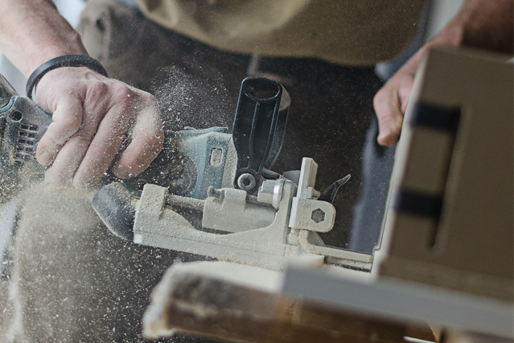
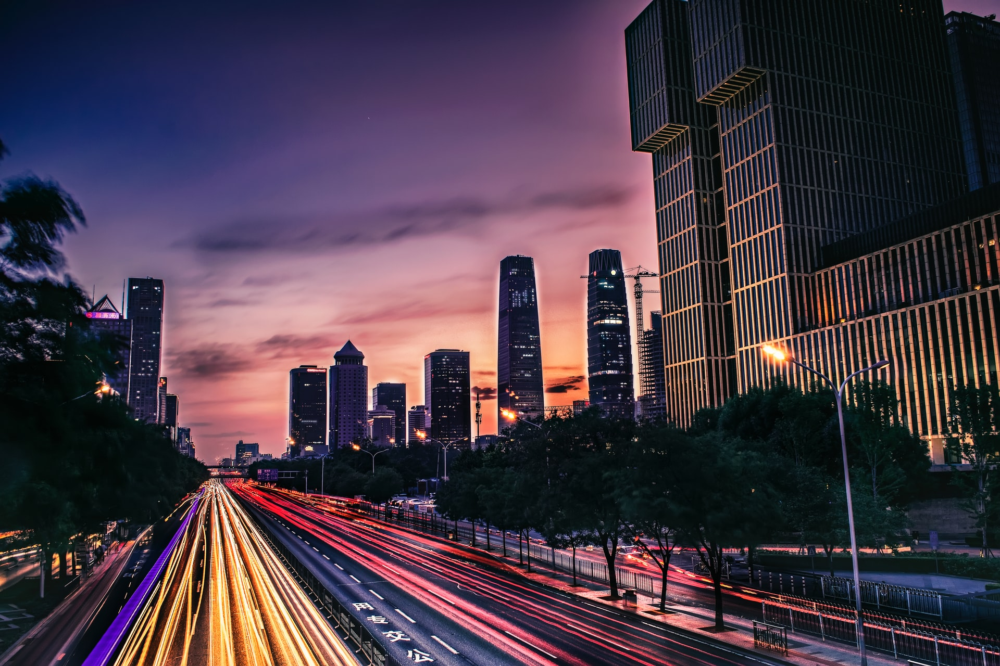

MODULO1: IL TEMPO DI SCATTO
Il tempo di scatto (o tempo di esposizione) è il tempo durante il quale l'otturatore della macchina fotografica rimane aperto
per permettere alla luce di raggiungere la pellicola o il sensore (nel caso della macchina digitale).
In combinazione col diaframma, regola la giusta quantità di luce per ottenere una fotografia ben esposta.
IL tempo di scatto si misura in secondi e varia da 1/8000 di secondi a 30 secondi.
Tempi di esposizione brevi:
Ne fanno parte i tempi pari a 1/1000 di secondo o meno.
Questi valori sono necessari quando vogliamo congelare l’azione di soggetti che si muovono rapidamente.

Quando si utilizzano tempi così brevi bisogna fare attenzione, poichè viene ridotta di molto la quantità di luce che raggiunge il sensore.
Per far fronte a ciò, è necessario aumentare l'ISO (argomento del prossimo modulo).
Tempi di esposizione lunghi:
In questa categoria, possiamo includere i tempi che vanno sotto il trentesimo di secondo, all’incirca.
L'utilizzo di esposizioni lunghe verso fonti di luce in movimento fanno sì che diventino strisce luminose, oppure, ad esempio, persone che camminano diventano “fantasmi”.
Ciò accade perché, finché il diaframma rimane aperto il sensore continua a registrare quello che vede.
Quindi, se un oggetto si sposta, il sensore registrerà tutte le posizioni in cui lo “vede”.

Sarà necessario l'utilizzo di un treppiede, al fine di evitare foto mosse.